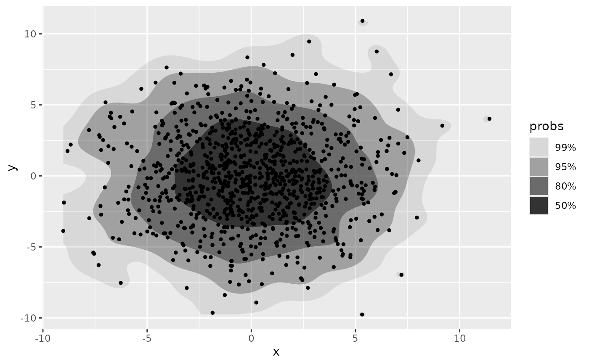
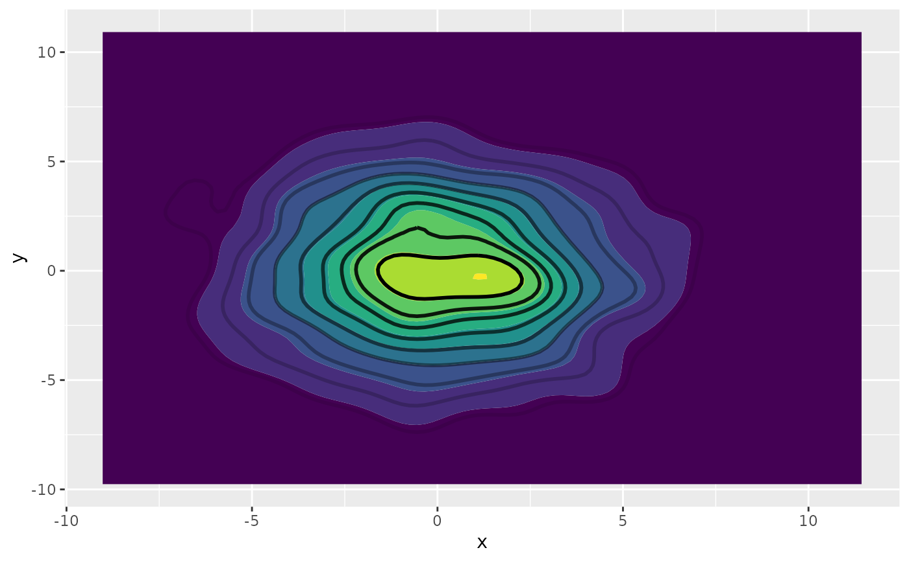
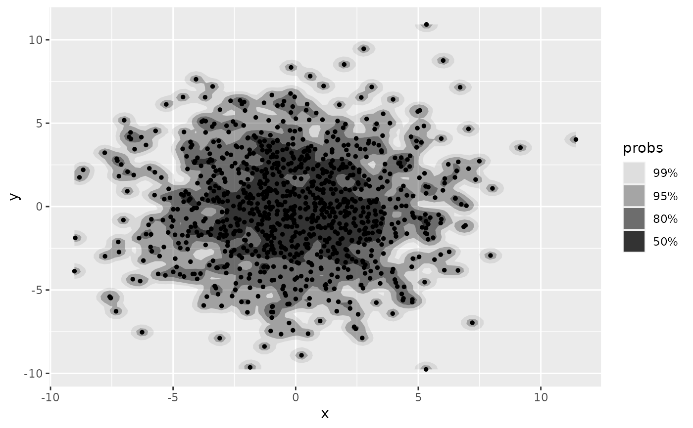

Function used to specify bivariate kernel density estimator
for get_hdr() and layer functions (e.g. geom_hdr()).
Usage
method_kde(h = NULL, adjust = c(1, 1))Arguments
- h
Bandwidth (vector of length two). If
NULL, estimated usingMASS::bandwidth.nrd().- adjust
A multiplicative bandwidth adjustment to be used if 'h' is 'NULL'. This makes it possible to adjust the bandwidth while still using the a bandwidth estimator. For example,
adjust = 1/2means use half of the default bandwidth.
Details
For more details on the use and implementation of the method_*() functions,
see vignette("method", "ggdensity").
Examples
set.seed(1)
df <- data.frame(x = rnorm(1e3, sd = 3), y = rnorm(1e3, sd = 3))
ggplot(df, aes(x, y)) +
geom_hdr(method = method_kde()) +
geom_point(size = 1)

# The defaults of `method_kde()` are the same as the estimator for `ggplot2::geom_density_2d()`
ggplot(df, aes(x, y)) +
geom_density_2d_filled() +
geom_hdr_lines(method = method_kde(), probs = seq(.1, .9, by = .1)) +
theme(legend.position = "none")

# The bandwidth of the estimator can be set directly with `h` or scaled with `adjust`
ggplot(df, aes(x, y)) +
geom_hdr(method = method_kde(h = 1)) +
geom_point(size = 1)

ggplot(df, aes(x, y)) +
geom_hdr(method = method_kde(adjust = 1/2)) +
geom_point(size = 1)
 # Can also be used with `get_hdr()` for numerical summary of HDRs
res <- get_hdr(df, method = method_kde())
str(res)
#> List of 3
#> $ df_est:'data.frame': 10000 obs. of 5 variables:
#> ..$ x : num [1:10000] -9.02 -8.82 -8.61 -8.4 -8.2 ...
#> ..$ y : num [1:10000] -9.76 -9.76 -9.76 -9.76 -9.76 ...
#> ..$ fhat : num [1:10000] 2.86e-08 6.11e-08 1.24e-07 2.39e-07 4.35e-07 ...
#> ..$ fhat_discretized: num [1:10000] 1.24e-09 2.65e-09 5.38e-09 1.04e-08 1.88e-08 ...
#> ..$ hdr : num [1:10000] 1 1 1 1 1 1 1 1 1 1 ...
#> $ breaks: Named num [1:5] 0.000226 0.000913 0.003072 0.007748 Inf
#> ..- attr(*, "names")= chr [1:5] "99%" "95%" "80%" "50%" ...
#> $ data :'data.frame': 1000 obs. of 3 variables:
#> ..$ x : num [1:1000] -1.879 0.551 -2.507 4.786 0.989 ...
#> ..$ y : num [1:1000] 3.405 3.336 -2.612 0.632 0.208 ...
#> ..$ hdr_membership: num [1:1000] 0.5 0.5 0.5 0.8 0.5 0.8 0.5 0.95 0.8 0.5 ...
# Can also be used with `get_hdr()` for numerical summary of HDRs
res <- get_hdr(df, method = method_kde())
str(res)
#> List of 3
#> $ df_est:'data.frame': 10000 obs. of 5 variables:
#> ..$ x : num [1:10000] -9.02 -8.82 -8.61 -8.4 -8.2 ...
#> ..$ y : num [1:10000] -9.76 -9.76 -9.76 -9.76 -9.76 ...
#> ..$ fhat : num [1:10000] 2.86e-08 6.11e-08 1.24e-07 2.39e-07 4.35e-07 ...
#> ..$ fhat_discretized: num [1:10000] 1.24e-09 2.65e-09 5.38e-09 1.04e-08 1.88e-08 ...
#> ..$ hdr : num [1:10000] 1 1 1 1 1 1 1 1 1 1 ...
#> $ breaks: Named num [1:5] 0.000226 0.000913 0.003072 0.007748 Inf
#> ..- attr(*, "names")= chr [1:5] "99%" "95%" "80%" "50%" ...
#> $ data :'data.frame': 1000 obs. of 3 variables:
#> ..$ x : num [1:1000] -1.879 0.551 -2.507 4.786 0.989 ...
#> ..$ y : num [1:1000] 3.405 3.336 -2.612 0.632 0.208 ...
#> ..$ hdr_membership: num [1:1000] 0.5 0.5 0.5 0.8 0.5 0.8 0.5 0.95 0.8 0.5 ...